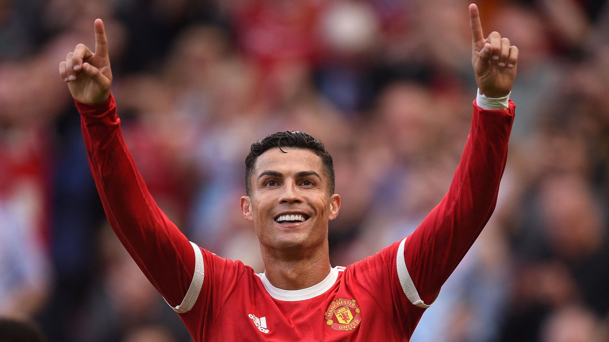
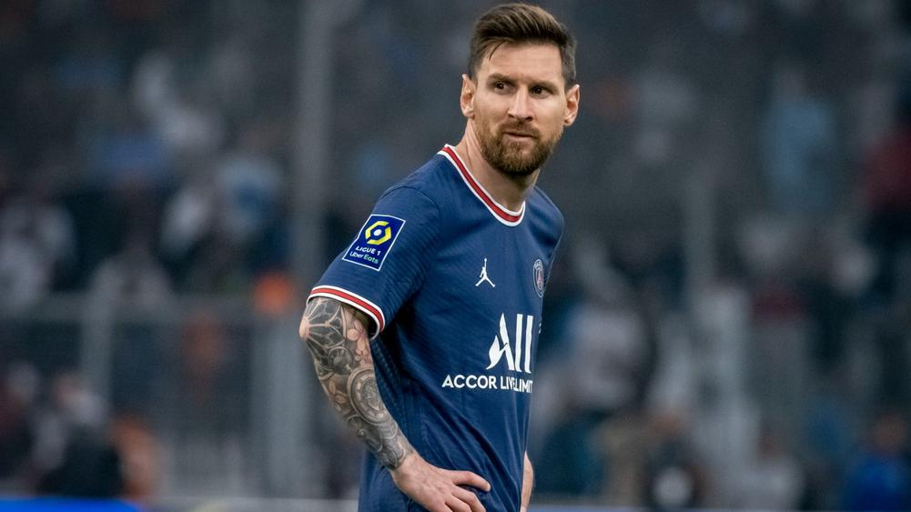
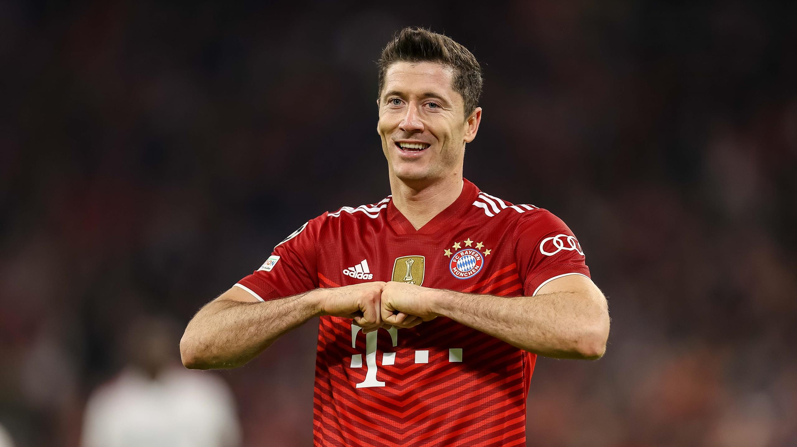

Top players
Top Players at Present
- 1.Cristiano Ronaldo

- -Cristiano Ronaldo dos Santos Aveiro (Portuguese pronunciation: [kɾiʃˈtjɐnu ʁɔˈnaɫdu]; born 5 February 1985) is a Portuguese professional footballer who plays as a forward for Premier League club Manchester United and captains the Portugal national team. Often considered the best player in the world and widely regarded as one of the greatest players of all time, Ronaldo has won five Ballon d'Or awards[note 3] and four European Golden Shoes, the most by a European player. He has won 32 trophies in his career, including seven league titles, five UEFA Champions Leagues, one UEFA European Championship and one UEFA Nations League.
- 2.Lionel Messi

- -Lionel Andrés Messi (Spanish pronunciation: [ljoˈnel anˈdɾes ˈmesi] born 24 June 1987), also known as Leo Messi, is an Argentine professional footballer who plays as a forward for Ligue 1 club Paris Saint-Germain and captains the Argentina national team. Often considered the best player in the world and widely regarded as one of the greatest players of all time, Messi has won a record seven Ballon d'Or awards,[note 2] a record six European Golden Shoes, and in 2020 was named to the Ballon d'Or Dream Team.
- 3.Robert Lewandowski

- -Robert Lewandowski (Polish pronunciation: [ˈrɔbɛrt lɛvanˈdɔfskʲi] (About this soundlisten); born 21 August 1988) is a Polish professional footballer who plays as a striker for Bundesliga club Bayern Munich and is the captain of the Poland national team. Recognized for his positioning, technique and finishing, Lewandowski is considered one of the best strikers of all time, as well as one of the most successful players in Bundesliga history.[4] He has scored over 500 senior career goals for club and country.
Back to Homepage